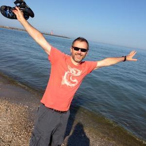

About Me
-

Hi! I am an open minded individual with curious brain, many ideas, and a pursuit for personal growth in character and intellectual capital. That is what brought me on my current path to study coding and possibly change careers. I like analyzing information, connecting the dots, and solving problems. Challenges are good. They make you think, use your skills, experience new things, make your everyday life interesting, and push you to new achievements. Learning to code is a challenge that I fully embrace.
I love my hobbies and my sports. Yoga, swimming, tennis, biking, and skiing bring me great enjoyment. I am an advanterous nature lover, nutritional and healthy eating semi-freak that loves to travel and explore. I am trying to enjoy simple things in life and dream big at the same time. To me balance is very important - experiencing the extremes could be fun, but going back to balance is vital.